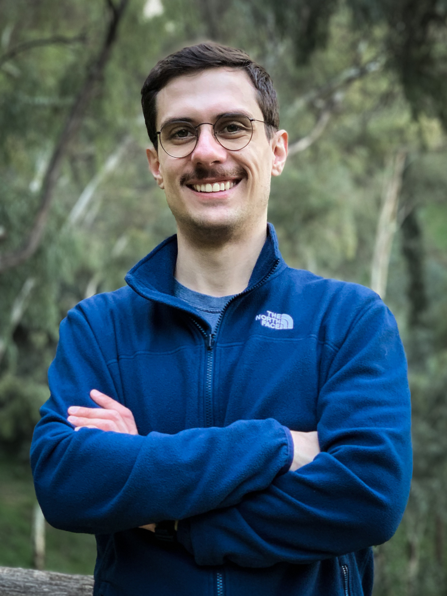

Nikolaos Tsagkas
Postdoctoral Researcher at the University of Amsterdam
PhD Candidate at the University of Edinburgh

I am a Postdoctoral Researcher at the University of Amsterdam, working with Prof. Efstratios Gavves on Physical AI. I am currently completing my PhD at the School of Informatics, University of Edinburgh, with my thesis defence on leveraging pre-trained visual representations for robot learning coming up soon. My PhD was funded by the Edinburgh Centre for Robotics, and I was privileged to be advised by Prof. Chris Xiaoxuan Lu (UCL) and Prof. Oisin Mac Aodha (University of Edinburgh). Along the way, I was fortunate to collaborate with Alexandros Kouris from the Samsung AI Center Cambridge, where I also interned in late 2025, working on compositional generalization in Vision-Language-Action models.
Before my PhD, I completed an MSc in Artificial Intelligence with distinction at the University of Edinburgh, where I worked on Generative Capsule Models under the supervision of Prof. Chris Williams. I also hold a BSc and MSc in Electrical and Computer Engineering from the University of Patras, Greece.